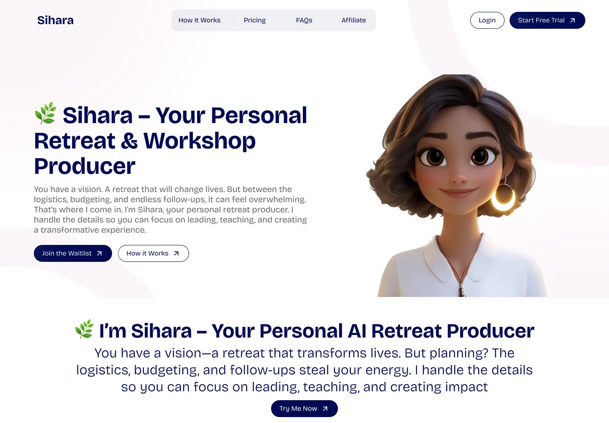
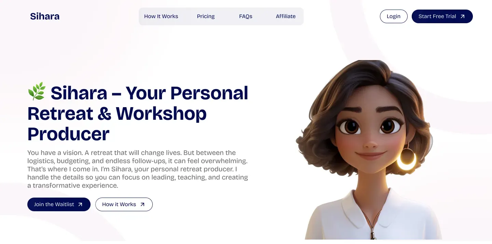
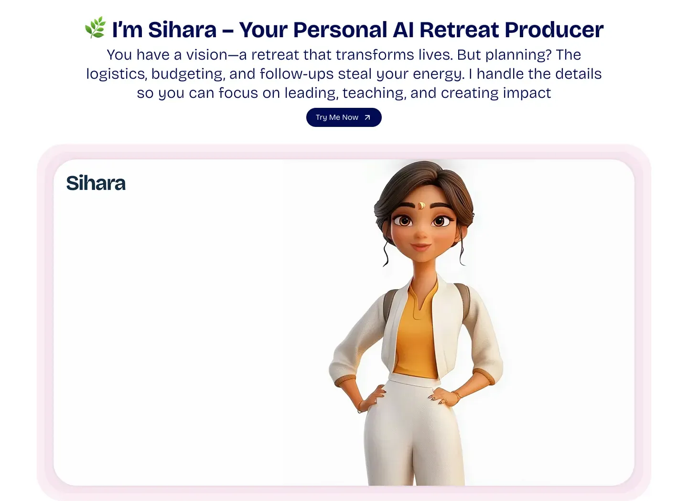
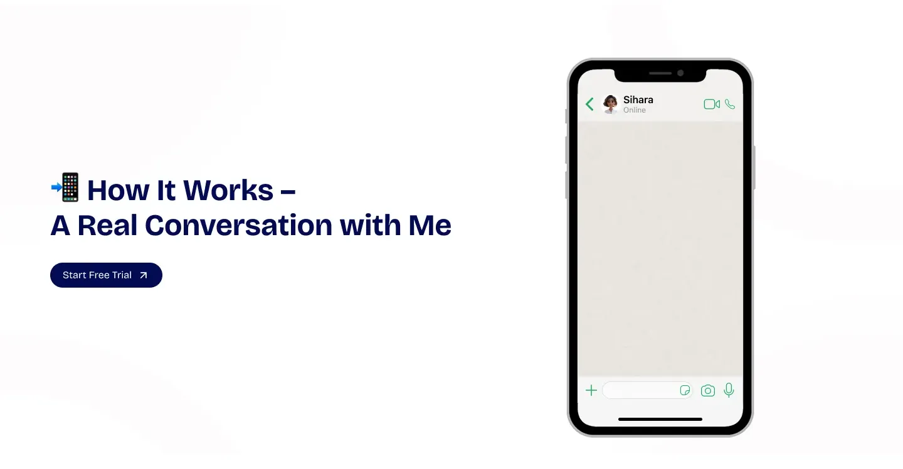
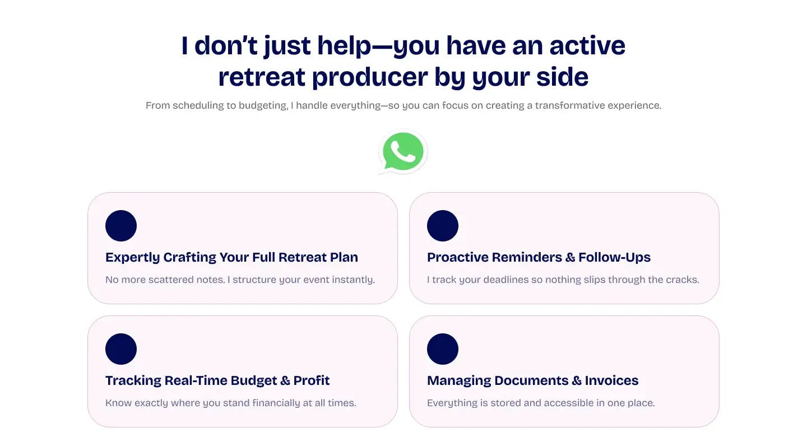
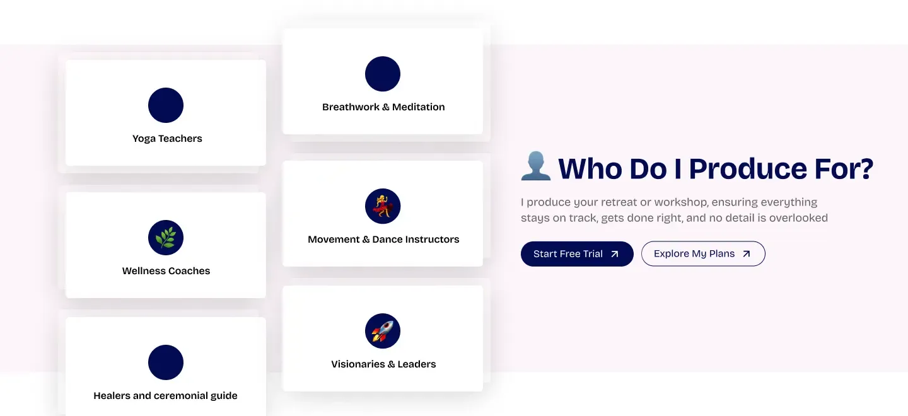
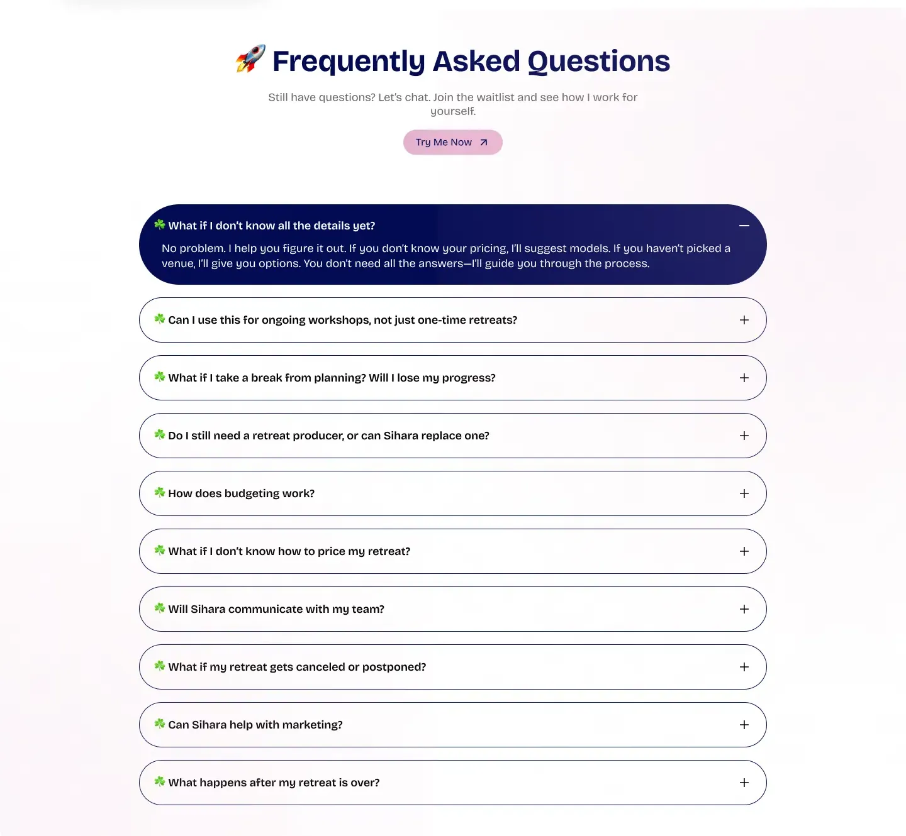
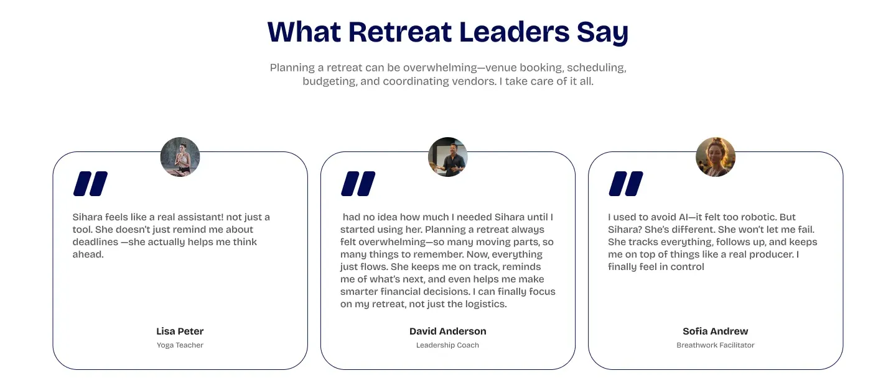
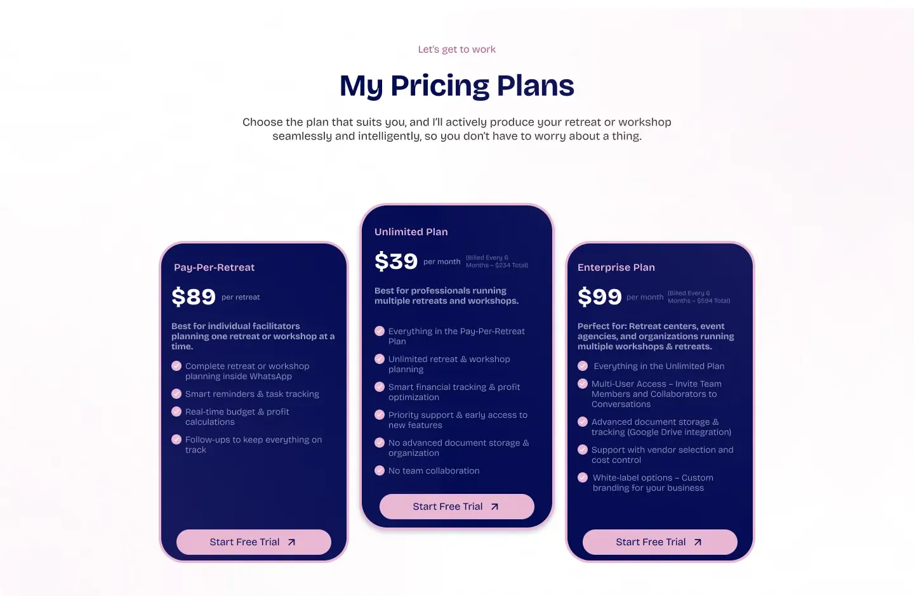
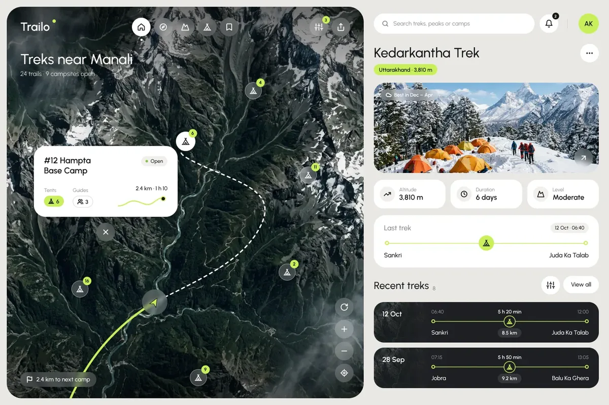

SiharaAI SaaS landing page
Meet your personal AI retreat producer. - AI SaaS Landing Page UI/UX Case Study
A landing page that introduces an AI assistant as a friendly character, then shows exactly how she helps.

01Overview
A landing page that introduces an AI assistant as a friendly character, then shows exactly how she helps.
Sihara is an AI assistant that plans retreats and workshops for yoga teachers, coaches and wellness leaders: plans, budgets, reminders, documents and follow-ups. I designed the product landing page, from the persona-led hero and chat demo to audiences, FAQ, testimonials and pricing.
02The challenge
What had to be solved
AI tools often feel abstract. Retreat leaders are creative people who hate admin; they need to trust that an AI will handle the details without losing the personal touch.
Design goals
- Give the AI a warm, trustworthy face
- Show the product working, not just describe it
- Speak directly to each audience
- Make pricing simple to compare
03Process
How I approached it
- A character, not a chatbotSihara speaks in the first person, with a 3D character and short speech bubbles.
- Show the conversationA phone mock-up demonstrates a real planning chat.
- Name the audienceYoga teachers, coaches, healers and leaders each get a card.
- Clear pricingPay-per-retreat, unlimited and enterprise plans side by side.
04Hero
An AI with a face and a voice.
Sihara introduces herself in the first person with a 3D character, a waitlist button and a secondary "How it works".

05Introduction
What she does, in her own words.
A large character card and three speech bubbles explain how Sihara builds plans, keeps you on track and protects your budget.

06How it works
Show the conversation, not a feature list.
A phone mock-up shows a real planning chat, followed by four capability cards.


07Who it is for
Name the audience.
Yoga teachers, wellness coaches, breathwork and movement instructors, healers and leaders each get a card.

08FAQ and testimonials
Answer the doubts, then let leaders speak.
An FAQ covers pricing, cancellations and how Sihara works with a team, followed by three testimonials.


09Pricing
Three plans, one clear favourite.
Pay-per-retreat, unlimited and enterprise plans side by side, with the unlimited plan raised and highlighted.

10Decisions
Key design decisions
"I build your retreat plan in seconds" makes the AI feel like a team member rather than software.
Warm pink cards against navy balance friendliness with professionalism.
The unlimited plan is raised and darker, guiding most visitors to the best fit.
11Design system
Visual language
Deep navy and soft blush pink, rounded cards, pill buttons and a 3D character as the brand face.
TypeBold rounded sans-serif headlines
12Outcome
What was delivered
Sihara gets a landing page that makes an AI product feel personal and easy to understand, with a clear path from first impression to free trial.
If the project continues, next I would:
- Design the in-app chat experience
- Add a cost calculator for retreats
- Test headlines with retreat leaders
